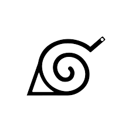

La Alde Oculta de la Hoja
Abreviada como Konoha, es uno de los cinco grandes pueblos ninja. Está ubicado en un bosque cercano a una montaña que lo domina y en el que están esculpidos los rostros de los diversos Hokage que han gobernado a lo largo del tiempo.
Aldea Oculta de la Arena
Abreviada como Suna, es uno de los cinco grandes pueblos ninja y como tal tiene a un Kage, conocido como Kazekage. Cada Kazekage se celebra mediante la creación de una estatua que lo representa y se coloca en la sala donde se reúne el Consejo de Suna.Los ninjas de la aldea utilizan principalmente un equipo que consiste en un vestido largo que reduce el calor del sol y que a menudo se combina con el uso de telas y vendas para cubrir la cabeza.

Aldea Oculta de la Nube
Abreviada como Kumo, es una aldea que se encuentra en el País del Rati en la parte superior de una alta montaña escondida en las nubes. Siendo una de las cinco grandes aldeas ninja, tiene un Kage: el Raikage, que siempre adopta el nombre «A».Los ninja de esta aldea usan un uniforme completamente diferente al de otros países: para mejorar su capacidad ofensiva, el uniforme se cierra solo alrededor de un hombro, dejando mucha libertad de movimiento al brazo de apoyo de tal manera que enfatiza un ataque.
Aldea Oculta de la Roca
Abreviada como Iwa, se encuentra en el País de la Tierra. Siendo una de las cinco grandes aldeas ninja, en la cabeza de la aldea se encuentra un Kage, el Tsuchikage. Los ninjas de esta aldea son expertos en el uso de técnicas terrestres. El uniforme utilizado incluye una chaqueta que cubre el torso más un brazo, mientras que el otro permanece descubierto.
Aldea Oculta de la Niebla
Abreviada como Kiri, es una de las cinco grandes aldeas ninja, ubicado en el País del Agua. Siendo una de las cinco grandes aldeas ninja, a la cabeza de la aldea se encuentra un Kage, el Mizukage. Los ninjas de este pueblo se especializan en técnicas de agua. El uniforme incluye un vestido con cuello alto para defenderse del frío de la región, así como guantes y telas para proteger los dedos del frío.